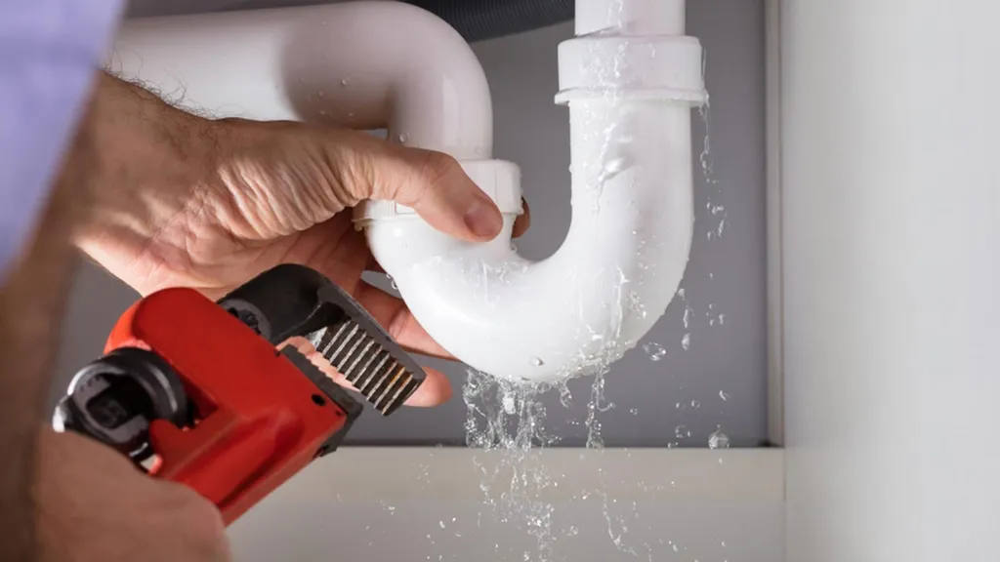

Common Plumbing Emergencies in Broward County and How to Handle Them
Common Plumbing Emergencies in Broward County and How to Handle Them
Plumbing emergencies can strike at any time, often when least expected. In Broward County's unique climate, where heavy rains and high humidity are common, being prepared for plumbing emergencies is crucial for every homeowner. This guide will help you identify common plumbing emergencies and take the right steps to minimize damage before professional help arrives.
Table of Contents
Burst Pipes: A Broward County Homeowner's Nightmare
Broward County's occasional cold snaps can cause pipes to freeze and burst, but even year-round, aging pipes can fail unexpectedly. A burst pipe can release hundreds of gallons of water per hour, leading to extensive water damage.
What to do immediately:
- Shut off the main water valve to stop the water flow
- Turn off the electricity in affected areas if water is near electrical outlets
- Call a 24/7 emergency plumber
- Remove valuables and furniture from the affected area
- Use towels to soak up standing water
Severe Clogs and Backups
Broward County's older neighborhoods often have aging sewer lines that are prone to clogs from tree roots, grease buildup, or flushed items. A severe backup can cause wastewater to back up into your home, creating health hazards.
Temporary solutions while waiting for a plumber:
- Stop using all water fixtures
- Avoid using chemical drain cleaners which can damage pipes
- If safe, remove visible debris from floor drains
- Open windows for ventilation if there's a sewage smell
Water Heater Failures
A failing water heater can lead to leaks, flooding, or even dangerous pressure buildup. In Broward County's hard water areas, sediment buildup accelerates wear on water heaters.
Warning signs of water heater failure:
- Rusty or discolored water
- Strange noises from the tank
- Water pooling around the base
- Inconsistent water temperatures
Gas Leaks: A Silent Danger
While less common, gas leaks are extremely dangerous. If you smell gas (a rotten egg odor) or hear hissing near gas lines:
- Evacuate immediately
- Don't use electrical switches or phones
- Call the gas company from a safe location
- Contact a licensed plumber for repairs
Hurricane and Storm Preparation
Broward County's hurricane season demands special plumbing preparations:
- Install backflow preventers to protect against sewage backup
- Secure outdoor furniture and objects that could damage pipes
- Know where your main water shut-off valve is located
- Consider installing a sump pump if you're in a flood-prone area
When to Call a Professional
While some minor issues can be handled with basic tools, these situations require immediate professional attention:
- Sewage backup
- No water in the entire house
- Gas leaks
- Major leaks you can't control
- Water heater issues (especially gas models)
Emergency Plumbing Kit Essentials
Every Broward County home should have:
- Pipe wrench
- Plunger
- Plumber's tape
- Bucket
- Towels/rags
- Flashlight
- Shut-off tool for main water valve
Why Choose a Local Broward County Plumber
Local plumbers understand Broward County's unique plumbing challenges, including:
- Coral rock soil conditions
- Saltwater corrosion issues
- Local building codes and regulations
- Common problems in your specific neighborhood
Professional Plumber Tip
Consider flushing your water heater annually to remove sediment buildup. This simple maintenance step can significantly extend the life of your unit and improve energy efficiency. For homes with hard water in Broward County, we recommend installing a water softener to reduce mineral deposits and protect all your plumbing fixtures, not just your water heater.
Conclusion
Being prepared for plumbing emergencies can save you thousands in water damage and repairs. Remember, quick action is crucial when dealing with water or gas leaks. Keep our number handy for 24/7 emergency service.
Need emergency plumbing service in Broward County? Call Plumbing 24 Service Inc at (954) 664-0144 for immediate assistance.
Need help with a plumbing problem?
Our professional plumbing team is available 24/7 to address all your plumbing needs in Broward County.
Call us: (954) 664-0144